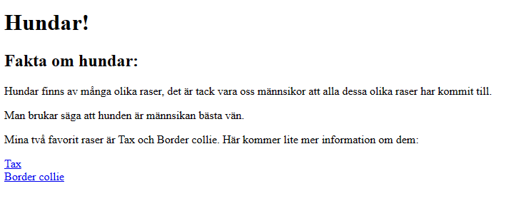
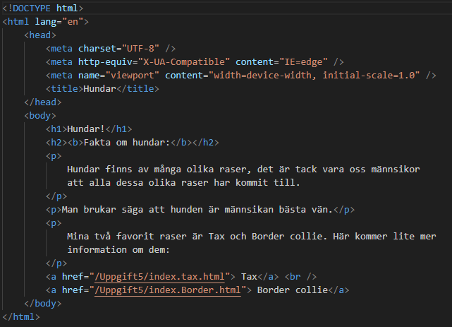
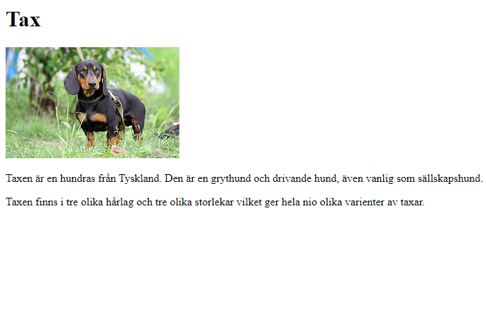
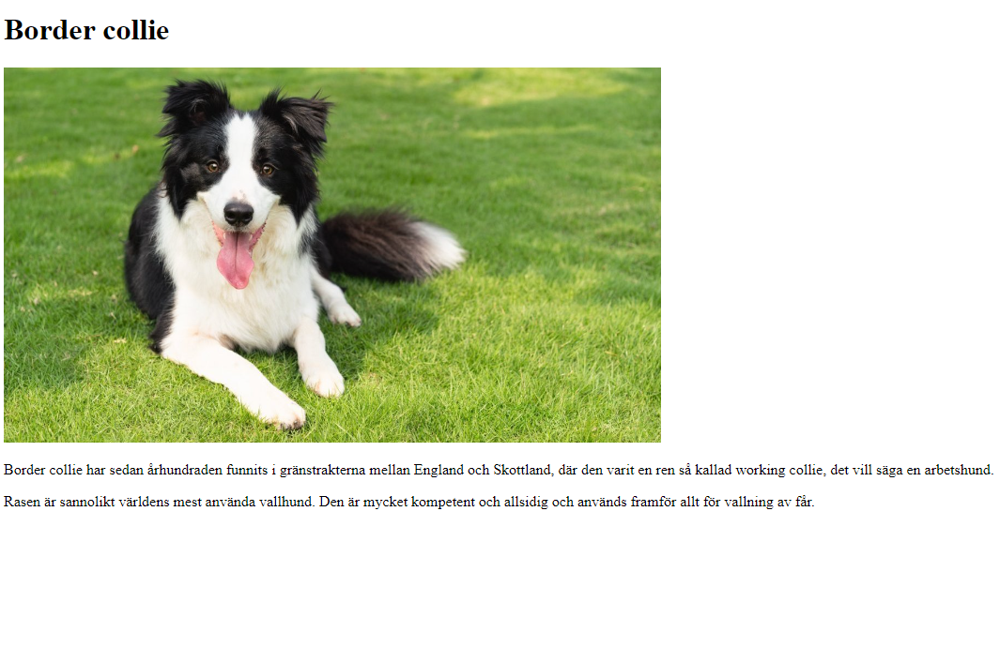

Uppgift var att göra en sida som handlar om hundar. Sidan skulle innehålla två länkar med andra hundraser som skulle gå att trycka på, vilket sedan skulle göra att man kom till en ny sida som handlar om just den rasen. Detta var ett av mina tidigaste projekt och det var första gången jag fick lära mig hur länkar mellan olika sidor fungerar.
Hemsida hundar


Skapade ett html-dokument med huvudrubrik, sub rubrik och text. På första sidan skrev jag allmänt om vad en hund är och hur stor del dem spelar för oss människor.

Därefter länkade jag till två andra sidor på några av mina favorit hundraser. Jag länkade till dem andra sidorna med hjälp av en “a” tagg.

På den andra sidan använde jag mig av samma utseende för att göra det enkelt. Jag hade även med fina bilder på respektive hundras.